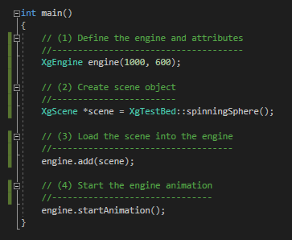
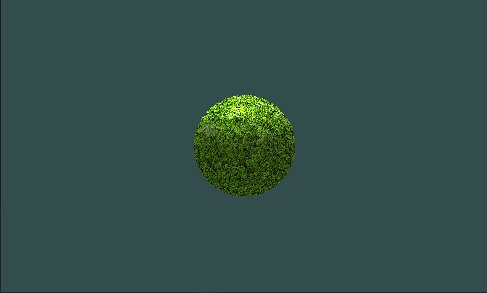
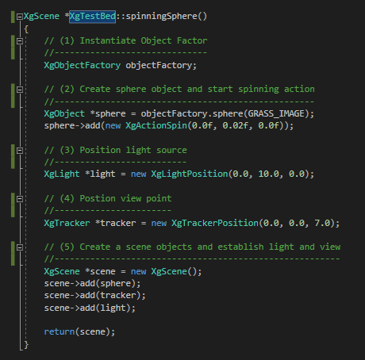

The Xg Engine Library introduces an object-oriented API used for creating games animation, simulations and data visualization. The creation of an XgEngine object is the controlling mechanism for creating, managing and executing a Xg Engine Library scene. A scene defines all assets, asset behaviors, light sources and view positions related to the animation. It is the scene that the developer must create and pass to the engine. Without a scene, there is nothing to animate. The Xg Engine Library provides several defaults and templates that allow for quick development of some scenes and object values. These objects and defaults will be introduced later in this tutorial. The execution of a scene requires a three-step approach.
The Xg Engine Library presents a object oriented API used for creating games animation, simulations and data visualization. The creation of an XgEngine object is the controlling mechism for creating, managing and executing a Xg Engine scene. The execution of a scene requires a three step approach.
 A basic example of the Xg Engine Library API is a spinning sphere. Placing a sphere in the middle of the scene and creating a hovering light is a straightforward task. The view (or camera) position is located in front of the sphere to view the specular default lighting.
The Xg Engine Library presents a object oriented API used for creating games animation, simulations and data visualization. The creation of an XgEngine object is the controlling mechism for creating, managing and executing a Xg Engine scene. The execution of a scene requires a three step approach.
The Xg Engine Library presents a object oriented API used for creating games animation, simulations and data visualization. The creation of an XgEngine object is the controlling mechism for creating, managing and executing a Xg Engine scene. The execution of a scene requires a three step approach.